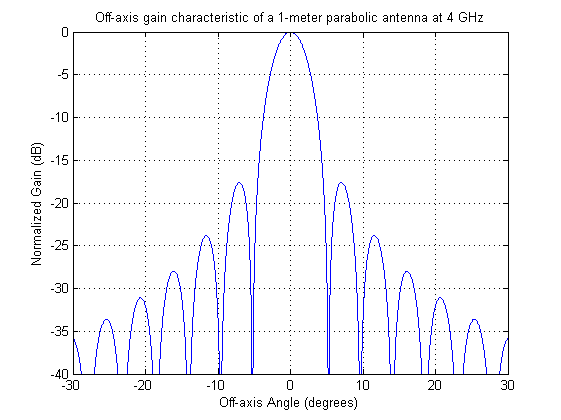

Off-axis gain characteristic of a 1-meter parabolic antenna at 4 GHz
Copyright 2007 Telecommunications Lab
values_angle=[-30:0.01:30]; c = 299792458; %m/s f = 4000000000; %4Ghz lambda = c / f; bessel_x = (pi/lambda).*(sind(values_angle)); bessel = (besselj(1, bessel_x)); nenner = sind(values_angle); constant = (pi/lambda)^(-2); offGain = ((2.*bessel./nenner).^2).* constant; offGain = 10* log10(offGain);
plot(values_angle, real(offGain)); title('Off-axis gain characteristic of a 1-meter parabolic antenna at 4 GHz') xlabel('Off-axis Angle (degrees)') axis([-30 30 -40 0]) ylabel('Normalized Gain (dB)') grid on;